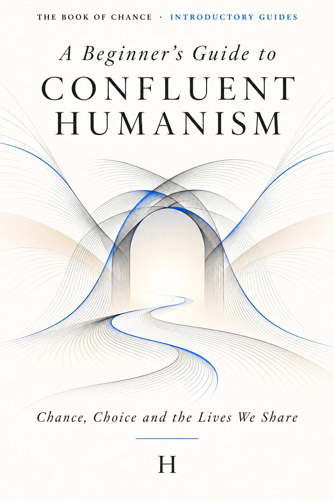

Start here · Introductory guide
A Beginner's Guide to Confluent Humanism
Chance, Choice and the Lives We Share
Editorial candidate · FreeOur lives begin in circumstances we did not make. What we do next can change what becomes possible.
The Book of Chance explores uncertainty, agency, hope, grief and our responsibilities to one another—through twelve readings and original parables.
New to these ideas? Start with the short beginner’s guide →


Two covers. One book. Your first choice.
From the circumstances we inherit, to the actions we take, to the lives we affect. Read in order or explore one idea at a time.
What had to happen before you could make your first choice?
And now that you are here, what can your choices make possible for someone else?
— From the IntroductionChoose the cover that speaks to you. Both editions contain the exact same readings, parables and illustrations. Neither represents a different teaching or path.
Choose your free editionLIGHT EDITIONDARK EDITIONA small practice for yourself, and a shared project to watch as the Fellowship takes shape.
Explore a rotating weekly question, try a private reflection and take home a printable worksheet.
Open the reflection space →CURRENT FOCUS · PLANNINGSee the next concrete goal, what needs to happen before it begins and how to take part when it's ready.
See what we're building →NEW · FREE PDF JOURNALDownload a thoughtfully designed, fillable 48-page journal with three repeatable practices.
Explore the Reflection Journal ↗Stories, practical companions and Letters from H. Follow whatever interests you; each work can be read on its own.

Chance, Choice and the Lives We Share
Editorial candidate · Free
Twelve Stories about Fortune, Choice and the Lives We Share
Editorial candidate
On Small Openings and the Conditions We Create
Editorial candidate
Twelve Discussions for an Uncertain Life
Editorial candidate
Hope · Acceptance · Reflection · Growth · Community
Editorial candidateCompanion publications and Letters are editorial candidates; independent review and final release checks are still outstanding. All reading is free and requires no account.
Have a question? Explore 26 answers about chance, belief and the Fellowship →Beyond the book, we are developing a free-to-join community for reflection, mentorship and shared projects. Meet different perspectives, learn from one another and, when ready, help create something useful together. Reading the book will always stand on its own.
Explore the future Fellowship